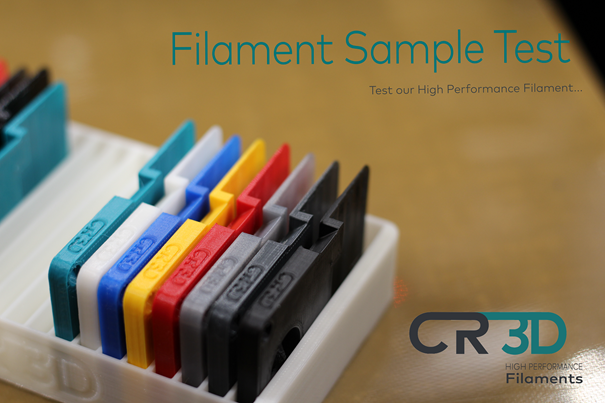
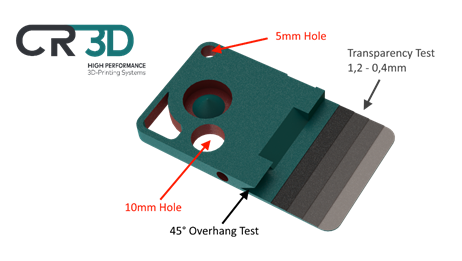

CR-3D Musterkarte
| Benötigt: | Nichts |
CR-3D Musterkarte |
||
|
Vielen Dank, dass Sie diese Musterkarte mit unserem CR-3D Hochleistungsfilament drucken.

Hier sind einige Merkmale dieses Teils:
Für ein Teil benötigen Sie etwa 6 bis 8 g unseres Filaments, zum Beispiel ungefähr 2 m PLA.
Außerdem gibt es eine passende Ablage für die Karten.
